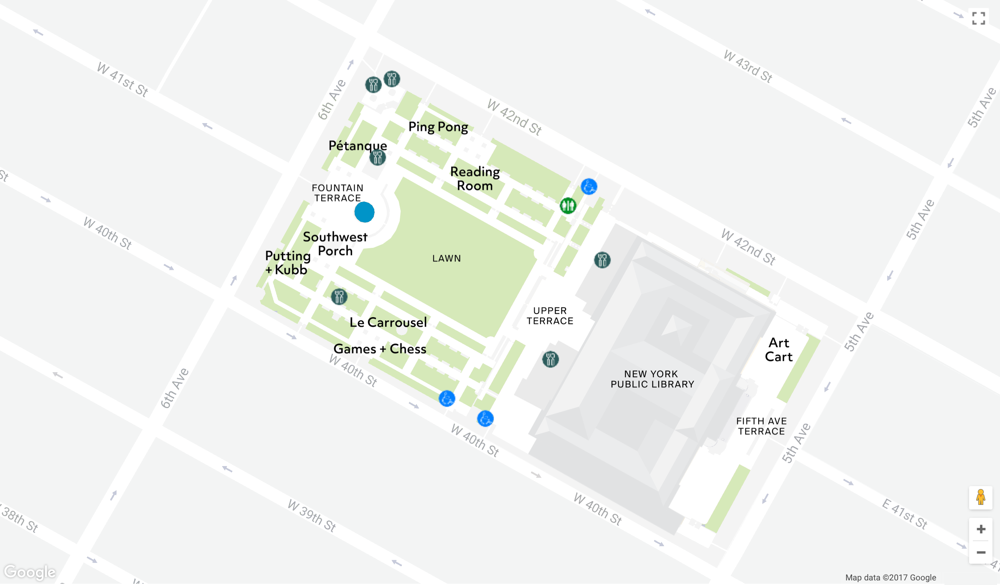

Observation : Bryant Park
-
Features :
- Midtown New York : 42nd Street and 40th Street, Fifth and Sixth Ave
- Rectangle shape of park : Lawn in the center, tall
- trees, chairs and tables, and public library
- Surrounded by skyscrapers : but quiet in the inside
- 2 Terraces : Fountain terrace, Upper terrace
- Several venders for coffee and snacks
- Carrousel, chess board, and ping pong table
-
Activities :
- People were sitting in chairs or benches, also lying on lawn grasses.
- Most of people were using smartphones.
- Reading books, Chatting, Eating, Taking a walk, Working on with laptops
- Taking pictures(tourists)
- Do nothing : Taking a rest
- Playing games : ping pong, ball game, chess game, kubb game
- TV show shooting
- Little concert(piano)
- Reading Area : Books are available
- French market is opened
- Yoga, Tai Chi lessons


Ideation : "Provoke Communication between Strangers"
The purpose of this intervention project was to provoke communication between strangers. In order to make people in Bryant park communicate with the others they do not know, there was an attempt to produce "communication machine."
First Iteration : Using Walkie-Talkie
What was made?
A communication machine contains two parts which are put separately to encourage strangers to talk and communicate through them. Walkie-talkies were put inside the two machines and attached to the internal surface of the machines. So that if users press and hold the specific part of the surface, the button of the walkie-talkie inside is automatically pressed. The cover was designed to be weird, unexpectful, and mysterious in order to attract people's attention. Lamp shade was used for talking and listening (icon of mouth), signal of "press to talk" was added.
How to use?
1. Attracted by the sound inside the machines : one of our group member kept calling people to talk through another walkie-talkie to the one inside the machines. "Hello! Is anybody there? I wanna talk to you!"
2. Listen: listen to the sound come out of the machine
3. Talk: press and hold the button to talk
Locations
1. The Lawn
2. The entrance of the lawn
3. Passway between two park gates
Results
Problems
1. Complicated: people are confused about how to use
(pressing & holding a button while talking, putting ear and mouth when they are listening or talking)
Like a graph above, among people who were actually talking to the machine, 50% did not use button, 24% did not hold button to talk, and 26% did use successfully.
2. People tend to talk with only one machine rather than communicate through two :
needs discussion for “how to provoke communication with other citizens?”
3. Sound is too weak
4. About half people just don’t care, we need more attractions
5. An written signal was inevitable
Significant Findings
1. Users tend to neglect or avoid unexpected situations.
(except: families, kids, groups of people, tourists)
2. Users tend to understand objects quickly with first impression, rather than exploring more details.
3. Most users are curious about where the sound come from.
4. They wanted to find out the difference between the two machines rather than the relationship between the two.
Next Iteration
1. Minimizing and simplifying user’s behaviors
2. Improving the visual of cover so that users understand how to use intuitively
3. Using phone, bluetooth speaker, or other devices to amplify sounds
4. Using one machine
Second Iteration : Using Phone and Speaker
Improvement
1. Using one machine : difficulties with instruction to use two machines - one of our group members kept calling and talking with people through the speaker phone.
2. Using phone, bluetooth speaker, and recorder : no need to press button, amplifying sounds
3. Adding icons : signal of mouth and ear (listen and talk!)
4. Coloring the machine : to attract more attention
5. Locating in more crowded space : a large floating population
6. Introducing a new way of interacting with the machine.
Advancements
1. More people showed attention and talked : About 10 people in half an hour
2. Clearer communication was possible than the first experiment
3. People who were talking with machine generally enjoyed it and showed laughter in their faces.
4. People would pass by it first, and often return to examine it further.
Results
Conversation
Conversations we had with them were full of jokes and greetings. Let me introduce some of those.
Them : "Where are you from?"
Us : “I’m from Mars.”
Them : “How did you come here from Mars?”
Us : “My master sent me.”
Them : “Who is your master?”
Us : “Spiderman.”
Them : “Where are you now?”
Us : “I am living inside the box.”
Them : “Can you sing a song to me?”
Us : “Happy birthday to you~”
Them : “Today is not my birthday.”
What we Learned
1. Intervention has to be considered with more elements than we thought : locations, appearance, technologies, context,
and unexpected situation(weather, construction…)
2. These elements need fabrication when they make a combination : arrangement of devices, adjusting sounds, and setup machine